Help you find Chinese character from paper
Select a number from 0 to 9 for each corner with the
order top left — top right — bottom left — bottom right.
These numbers represent certain shape:
0:A dot and a horizontal line亠
1:一乚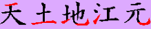
2:丨丿亅
3:丶 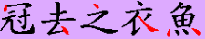
4:十乂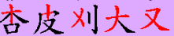
5:扌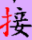
6:口
7:﹁「」﹂ 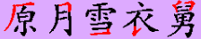
8:八丷人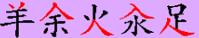
9:小忄⺌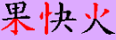
Sometimes decomposeing Chinese characters requires extra
component. The postion is above bottom right corner.
And
the extra component should not be covered by any stroke
which has been already used in the first four digits.
Below is the exmaple of four corner indexing from wikipedia.
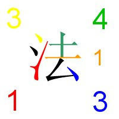
Draw the Chinese character on the panel in the order of strokes. Tradition Chinese characters have basic strokes:
丶 一 丨 丿 𠃍 亅 ㇏
㇀
There are 7 basic rules of Chinese stroke order:
1:When Chinese character structure is vertical,draw it from Top to Bottom.
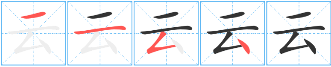
2:When Chinese character structure is horizontal, draw it from Left to right.
3:When the structure of Chinese characters is close to center symmetry,draw the center stroke first.
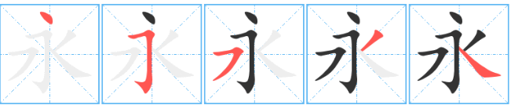
4:If the Chinese character is an unenclosed structure,draw the out frame first then the inside.
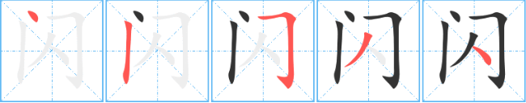
5:If the Chinese character is an enclosed structure,first draw the out frame except the bottom part, then the inside, finally "close" the frame.
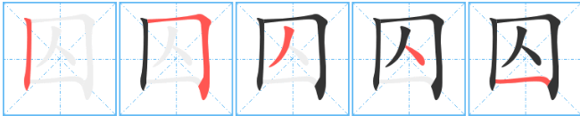